Welcome to radio planet earth!
Today we are going to play some banger tunes.
But first we would like to remind you about some
important things to remember during vacation. Did
you know that there are some precautions you should take to take care of nature?
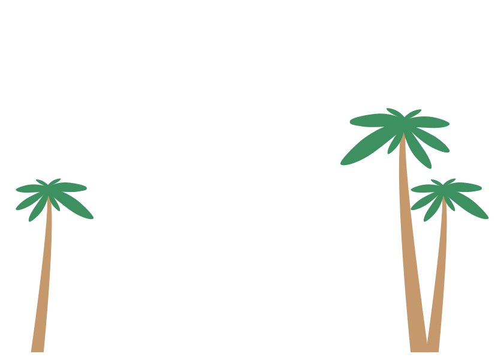
The UN's Sustainable Development Goal 15 is about taking care of life on earth.
Part of this is about how we behave as tourists. There is some clear advice; Respect the nature you
visit and the animals that live there. Take your trash home with you. Be careful not to damage the
areas you visit in any way.
The temperature is rising due to human activity.
If we neglect nature and do not take care of it, it can have catastrophic
consequences. In addition to this, there are more and more fossil gases in
the atmosphere. Together, this can result in plants dying and animals disappearing
due to a bad climate and lack of clean water.
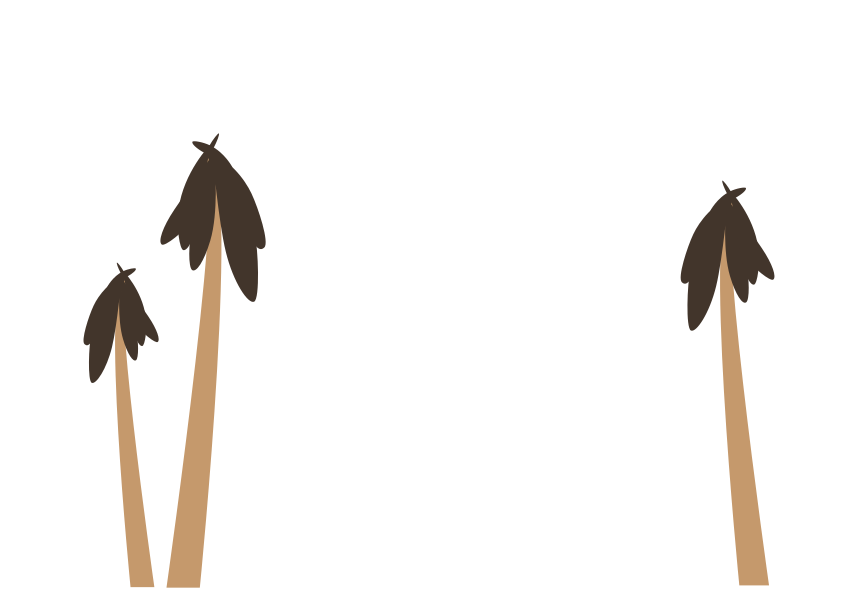
As global temperatures rise, many regions are experiencing longer
dry seasons, which can increase the frequency and intensity of forest fires. In a situation
like this, it is perhaps more important than ever that we take care of nature.
Therefore, think twice if you visit an exposed area.
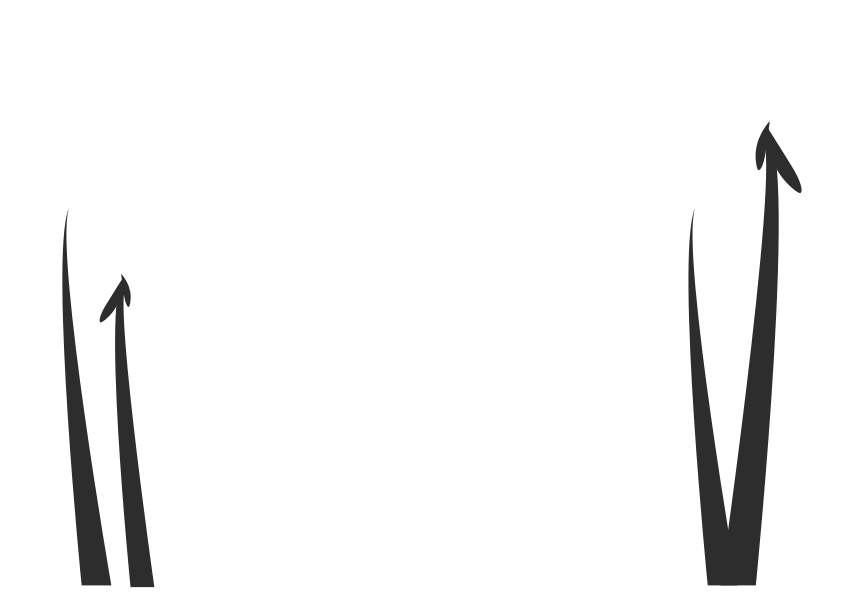
If you throw rubbish everywhere, it will litter nature and make it uninhabitable
for both animals and people. In the worst case, no plants will ever grow back. So let me say it once
and for all it is as much your responsibility to take care of nature as anyone else!
Thank you for listening to radio planet earth.
Finally, before I play some more bangers, I would recommend you to
check out United Nations goal 15 to find out more about what
kind of actions you can take to make life on earth as beautiful as it deserves!
 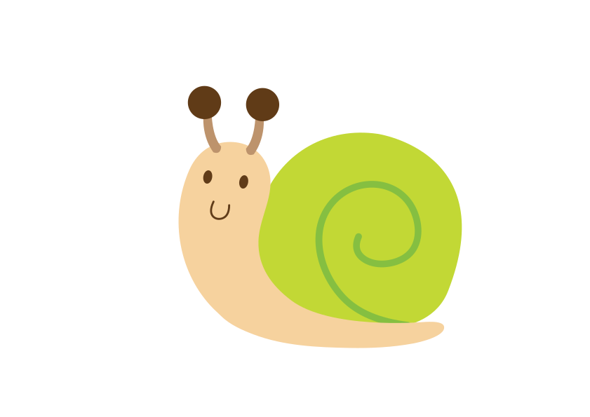
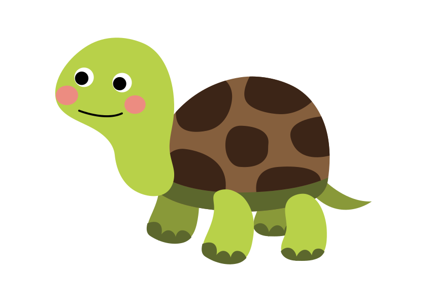
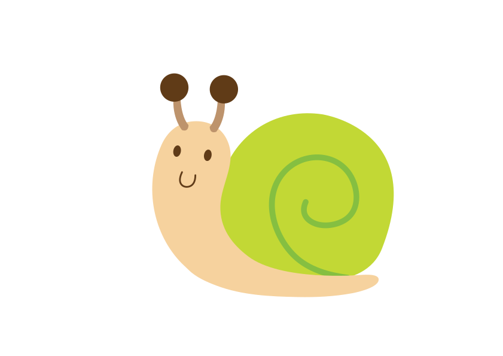
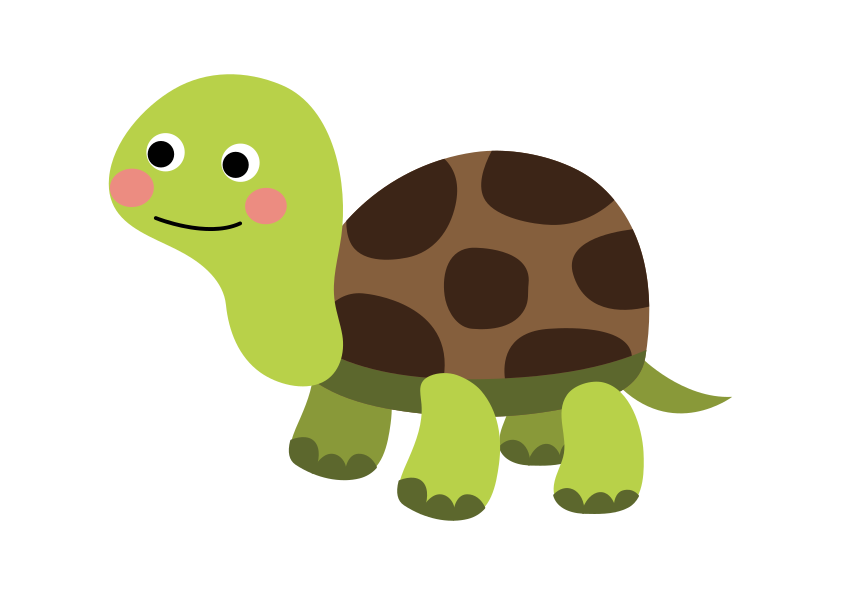
 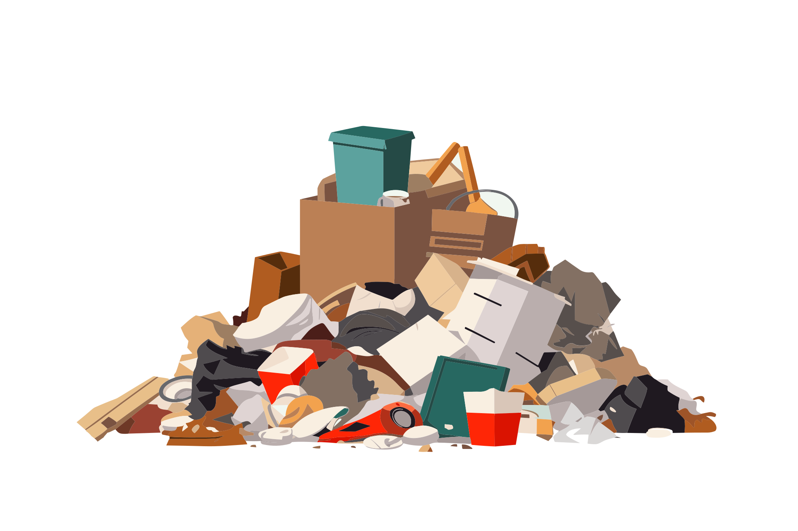
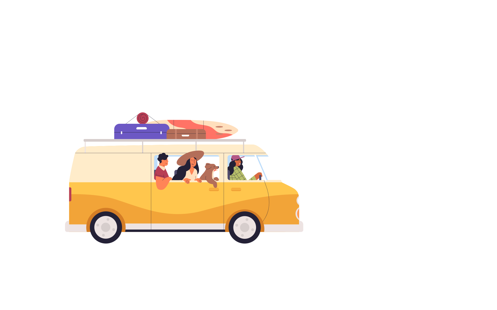
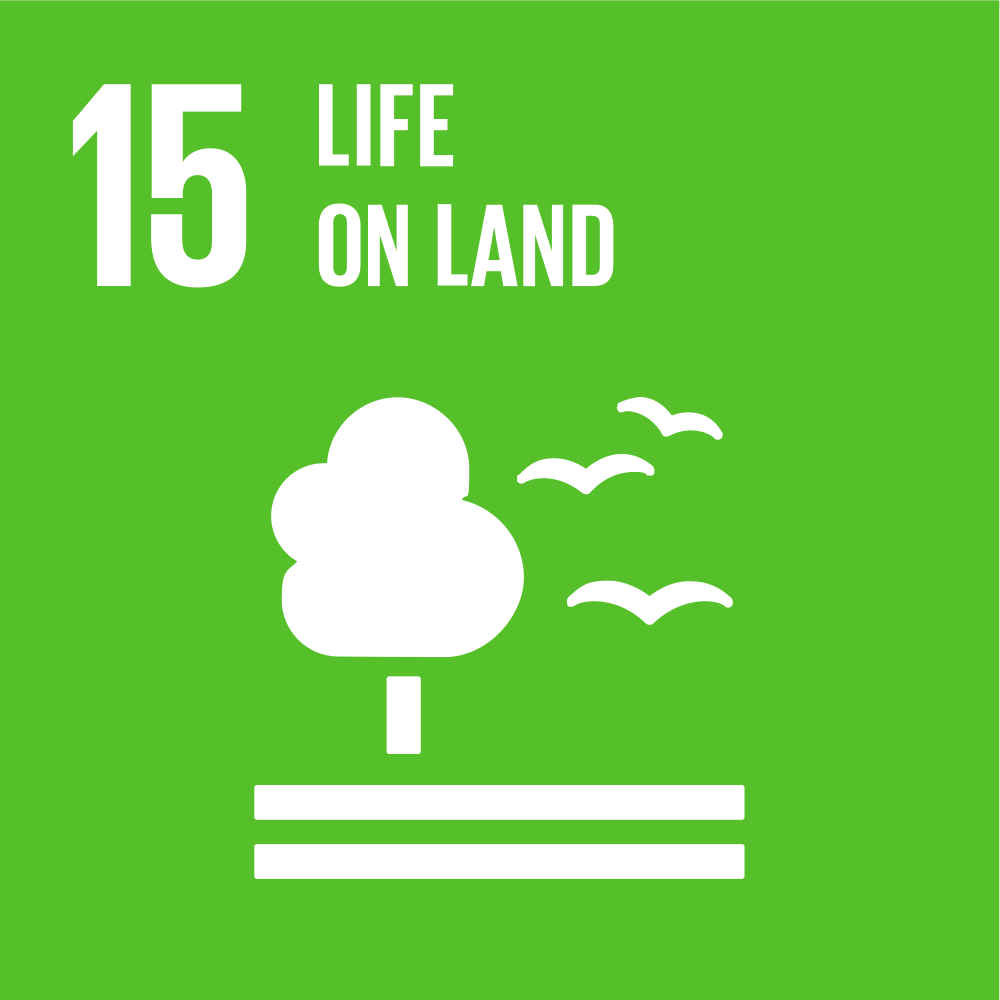
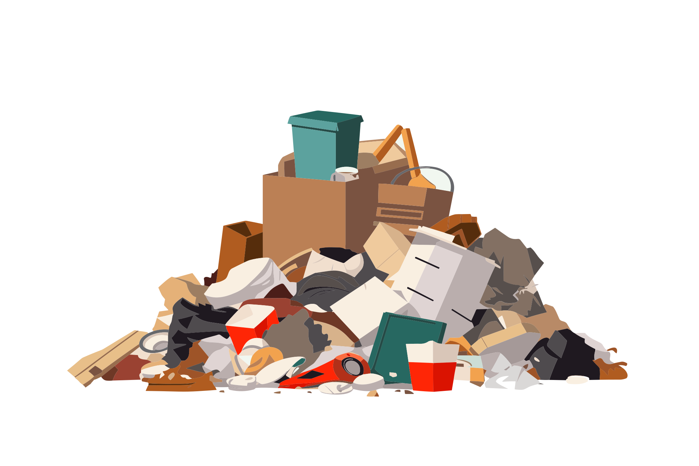
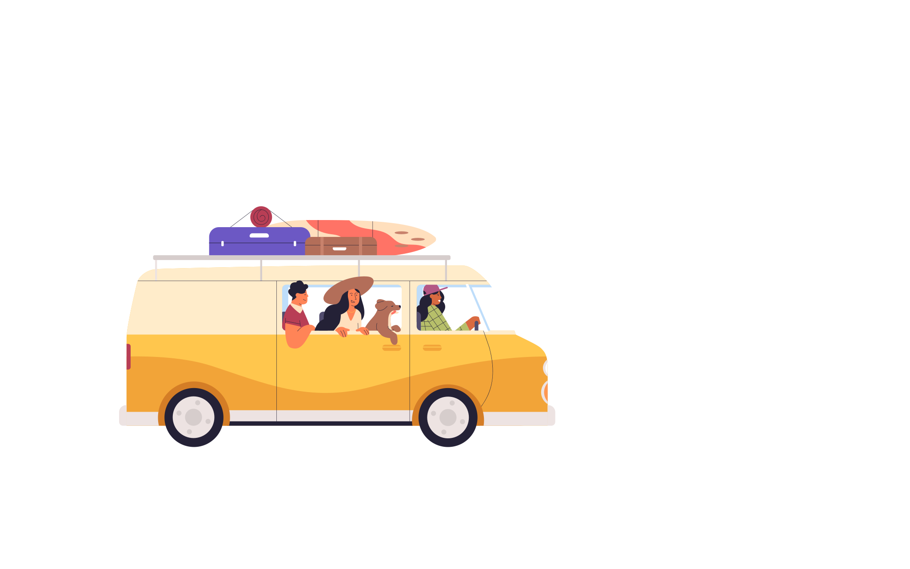
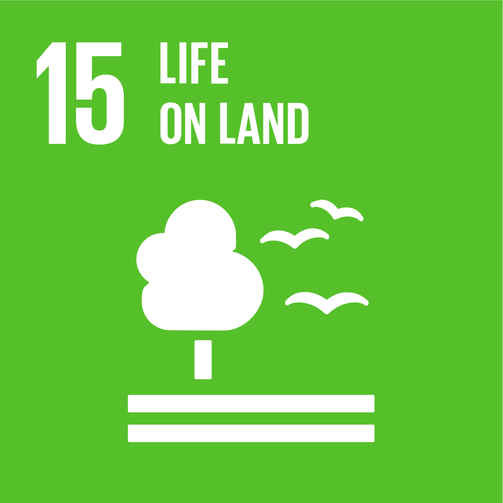